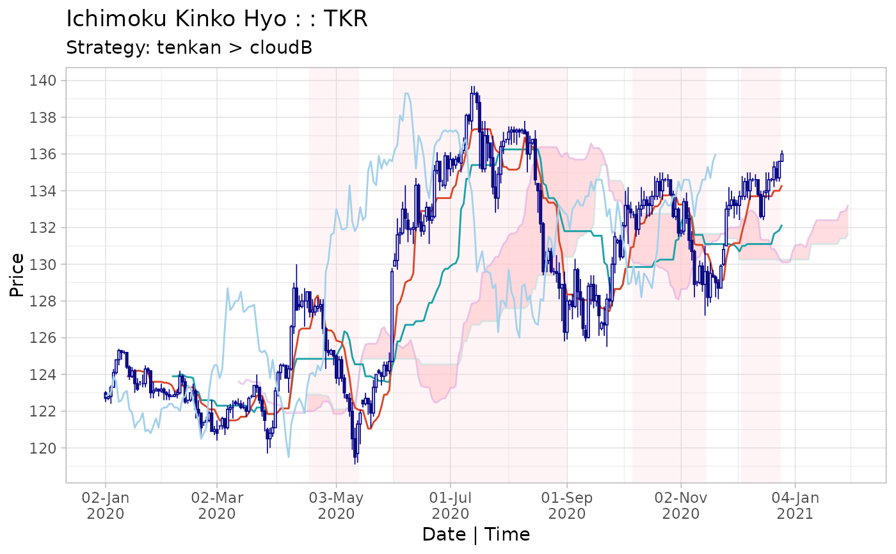

Create ichimoku cloud strategies using the indicator condition 'long / short while c1 > c2'. Complex strategies can be formulated as combined 'c1 > c2 & c3 > c4' (both conditions must be satisfied) or asymmetric 'c1 > c2 x c3 > c4' (where 'c1 > c2' denotes the entry and 'c3 > c4' the exit indicator).
strat( x, c1 = c("close", "chikou", "open", "high", "low", "tenkan", "kijun", "senkouA", "senkouB", "cloudT", "cloudB"), c2 = c("tenkan", "kijun", "senkouA", "senkouB", "cloudT", "cloudB", "chikou", "close", "open", "high", "low"), c3 = c("close", "chikou", "open", "high", "low", "tenkan", "kijun", "senkouA", "senkouB", "cloudT", "cloudB"), c4 = c("tenkan", "kijun", "senkouA", "senkouB", "cloudT", "cloudB", "chikou", "close", "open", "high", "low"), dir = c("long", "short"), type = 2 )
| x | an ichimoku object. |
|---|---|
| c1 | [default 'close'] column name specified as a string. |
| c2 | [default 'tenkan'] column name specified as a string. |
| c3 | (optional) column name specified as a string. |
| c4 | (optional) column name specified as a string. |
| dir | [default 'long'] trade direction, either 'long' or 'short'. |
| type | [default 2] if 'c3' and 'c4' are specified, type 2 will create the combined strategy 'c1 > c2 & c3 > c4' whilst type 3 will create the asymmetric strategy 'c1 > c2 x c3 > c4'. |
An ichimoku object augmented with the strategy.
The following assumption applies to all strategies: confirmation of whether a condition is satisfied is received at the 'close' of a particular period, and a transaction is initiated at the next 'open'. All transactions happen at the 'open'.
The original ichimoku object 'x' is augmented with the following additional columns used to calculate the strategy:
'cond', a boolean vector if the indicator condition is met, 'posn', a boolean vector indicating if a position is held, and 'txn', a vector representing the transactions to implement the position.
logret' is a column of log returns, 'slogret' is a column of log returns for the strategy.
ret' is a column of discrete returns, and 'sret' is a column of discrete returns for the strategy.
The strategy summary is saved as an object attribute and may be accessed by the summary() function or via look().
By default, the periods in which the strategy results in a position is shaded on the ichimoku cloud chart and the strategy is printed as the chart message (if not otherwise specified). To turn off this behaviour, pass the 'strat = FALSE' argument to plot() or iplot().
For complex strategies, let 's1' denote the strategy 'c1 > c2' and 's2' denote the strategy 'c3 > c4'.
The combined strategy 's1 & s2' means indicator conditions in 's1' and 's2' have to be met simulateneously for a trade position to be taken.
The asymmetric strategy 's1 x s2' means the indicator condition in 's1' has to be met to enter a trade position, and the indicator condition in 's2' has to be met to exit a trade position. These rules are applied recursively over the length of the data.
The boolean values showing whether these conditions are met are stored in the 'cond' column. For a strategy of type 's1 x s2', the 'cond' column will show when the indicator condition is met in s1.
Please refer to the strategies vignette by running:
vignette("strategies", package = "ichimoku")
cloud <- ichimoku(sample_ohlc_data, ticker = "TKR") strat <- strat(cloud, c1 = "close", c2 = "tenkan") summary(strat)#> [,1] #> Strategy "close > tenkan" #> --------------------- "----------" #> Strategy cuml return % 8.57 #> Per period mean ret % 0.0334 #> Periods in market 138 #> Total trades 20 #> Average trade length 6.9 #> Trade success % 35 #> Worst trade ret % -2.54 #> --------------------- "----------" #> Benchmark cuml ret % 9 #> Per period mean ret % 0.035 #> Periods in market 246 #> --------------------- "----------" #> Direction "long" #> Start 2020-01-13 #> End 2020-10-29 #> Ticker "TKR"